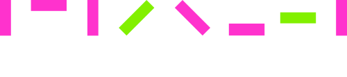

持份者参与及重要性议题
可持续发展管治
持份者参与及重要性议题

Listening to our Stakeholders
The ArchSD maintains an active dialogue with various stakeholders through robust two-way communication channels. This engagement strategy enables us to gain insights into stakeholder concerns, priorities and values.
Listening to our Stakeholders
The ArchSD maintains an active dialogue with various stakeholders through robust two-way communication channels. This engagement strategy enables us to gain insights into stakeholder concerns, priorities and values.
Department Consultative
Committee
Staff Associations
Staff Motivation Scheme
Staff Relation Units
Web Forum
Conferences
Meetings
Publications
Training Sessions
Events
Public Seminars
Department Consultative
Committee
Staff Associations
Staff Motivation Scheme
Staff Relation Units
Web Forum
After-action Reviews
Post-occupancy Evaluations
Surveys
Workshops
Focus Group Meetings
ArchSD Sustainability Reports
Events and Activities
Exhibitions
Mass and Digital Media
Public Seminars
Industry Engagement
The ArchSD strives to strengthen engagement with external stakeholders by participating in various government committees as well as industry and professional associations to provide recommendations, share experiences and promote best practices.
These include but not limited to:
- Advisory Committee on Built Heritage Conservation to provide advice on built heritage conservation;
- Committee on Planning & Land Development to consider and review policies on planning and land development issues;
- Development Bureau Steering Committee for Building Information Modelling (BIM) to formulate strategies for a wider adoption of BIM technology in major government capital works projects; and to monitor the implementation of BIM technology in public works projects;
- Hong Kong Green Building Council Sustainable Development Committee to provide guidance and advice on advanced and impactful sustainable building environment concepts and practices; and
- Joint Working Group on Modular Integrated Construction (MiC) to identify suitable technologies and practices of MiC for Hong Kong’s built environment.
Materiality Assessment
To identify the material ESG topics that have the greatest impacts on the ArchSD and our stakeholders, we undertake an annual comprehensive materiality assessment process according to the reporting principles of the GRI Standards.
This year’s materiality assessment was conducted by an independent consultant, who used a quantitative approach to identify the material topics, following the steps outlined in GRI 3: Material Topics 2021.
The year’s materiality assessment took into account the results of a questionnaire survey conducted in June 2025 among 6 stakeholder groups who have significant impacts on ArchSD’s operations or could be significantly affected by our operations. These stakeholder groups included the following:
Material issues for the organisation as well as industry-specific challenges and global megatrends were identified to produce 20 material ESG topics for this year’s Report. A total of 719 responses were received and the materiality results are shown in the table below:
Importance levels
High
Mid
Low
| Categories | Material topics | Importance |
|---|---|---|
| Environment | Energy mix and efficiency | High |
| Biodiversity and ecological impacts | Medium | |
| Management of greenhouse gas (GHG) emissions and related environmental risks | Medium | |
| Resource efficiency and circularity | Medium | |
| Water efficiency and recycling | Low | |
| Social | Health and safety for all | High |
| User health and safety in using the facilities | High | |
| Employment practices, welfare and rights | Medium | |
| Community engagement | Low | |
| Diverse and comprehensive staff training and development | Low | |
| Governance | Ethical practices | High |
| Climate risks and response | Medium | |
| Data security | Medium | |
| Management of ESG risks and opportunities related to the ArchSD's operations | Medium | |
| Management of ESG risks and opportunities related to the supply chain | Low | |
| Value Creation |
Bring positive impacts on the social well-being, livelihood and prosperity of local communities and individuals | High |
| Deliver environmentally and socially responsible projects | High | |
| Economic performance | Medium | |
| Use advanced technologies to enhance project quality and productivity | Medium | |
| Indirect economic impacts | Low |
Importance levels
High
Mid
Low
After scrutinising the feedback from all stakeholder groups, we identified 6 material topics (most significant impacts) that are disclosed in detail in the Report.
Bring positive impacts
on the social well-being, livelihood and prosperity of local communities and individuals
Deliver environmentally and socially responsible projects
Energy mix and efficiency
Ethical practices
Health and safety for all
User health and safety in using the facilities
Stakeholder Interview
Following the survey, two qualitative face-to-face interviews with both internal and external stakeholders were also arranged to gain insights on our key material issues and their sustainability expectations. We also maintained close communication with and collected feedback from stakeholders during the course of our daily operations.
External Stakeholder
External Stakeholder